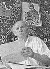

Григорій Крячко
Поезія та проза · 1937 — 2012
Про автора

Григорій Григорович Крячко. Світлина з архіву газети «Трудова слава»
Крячко Григорій Григорович (16 липня 1937 — 29 липня 2012) — український журналіст, поет і прозаїк. Народився у селі Новий Стародуб Петрівського району на Кіровоградщині в сім'ї військовослужбовця Олександрійського полку. Після школи — армія, робота на заводах Олександрії; обирався депутатом міської ради.
З 1959 року друкувався як позаштатний кореспондент у «Кіровоградській правді» та олександрійській газеті «Ленінський прапор». Вищу журналістську освіту здобув у Києві. Понад тридцять років, з 1965 по 1996, завідував відділом петрівської районної газети «Трудова слава» і вів у ній «Літературну сторінку». Загалом друкувався у сімнадцяти виданнях, серед яких «Сільські вісті», «Літературна Україна», «Народне слово», «Україна-Центр», журнали «Дніпро» і «Дивослово», збірник «Різдво в українській поезії».
З 1979 року — член Національної спілки журналістів України, з 1999-го — член Кіровоградського обласного літературного об'єднання «Степ». Про нього писали у двотомнику «Кіровоградщина: історія та сучасність центру України» (Б. Кузик, В. Білошапка, 2005).
Вірші почав публікувати вже у пенсійному віці — «серед журналістів це типовий випадок, коли авторське перо, наснажене журналістикою, здіймається вище — до художнього слова», писала про нього Антоніна Корінь. Був одружений, мав трьох дітей і трьох онуків. Помер 29 липня 2012 року в рідному Новому Стародубі.
«Хотілось, щоб і моє ім'я та книги послужили нащадкам доброю настановою, прикладом незрадливої любові до рідного краю, зачарування красою природи, людини.»
— з листа Григорія Крячка до музею І. К. Карпенка-Карого, 5 березня 2011 року
Книги
«Заворожений степом» (2002) — поезія та проза. Видавництво «Імекс»; упорядник і редактор Віктор Погрібний, передмова поетеси Катерини Горчар, художник Іван Швидкий.
«Повінь» (2004) — оповідання для дітей молодшого і середнього шкільного віку, присвячена 60-річчю Перемоги. Видавництво «Степ»; редактор Світлана Барабаш, художник Іван Швидкий. «Повінь дитинства — найпрекрасніша, найчистіша, найбільш сонячна повінь життя», — запрошував автор юних читачів.
«На дорогу» — третя книга, яку автор готував до друку; за життя видати її не встиг.
Пісні
На вірші Григорія Крячка композитори Олександр Решетов і Павло Лойтра написали понад десять пісень, серед них «Петрівський край», «Солов'ї-літа», «Калина», «Рідна хата», «Гречка відцвітає». Пісня «Петрівський край» на музику П. Лойтри стала своєрідним гімном Петрівщини:
Квітни вічно, Петрівщино,
Колосися, поле,
Будь завжди, погожа днино,
І щастися, доле.
Відзнаки
- Золота медаль української журналістики;
- Почесний знак Національної спілки журналістів України;
- грамоти обласної державної адміністрації та літературного об'єднання «Степ».
Штрихи до портрета

Колеги згадують, що Григорій Григорович любив носити капелюха «по-гуцульськи», вивернувши його впадинкою нагору, а вуса підстригав так, щоб бути схожим на Тараса Шевченка. Був завзятим оборонцем української мови — молодшим колегам радив:
«Шукай саме те слово, яке тобі потрібне, якого просить твоя душа».
А ще мав упізнаваний лаконічний гумор, який пробився навіть у «Літературну Україну»: «Гарна ти в мене, але жаль, що не чужа»; «Від мародера до мільйонера — один крок»; «Жили в парі: він — на нарах, вона — на Канарах».
Дитя війни, він усе життя високо цінував пам'ять про батька, ветерана Другої світової, —
про це його оповідання «Тато, війна і я» та «По морях і океанах».